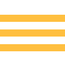

[Paragraph 1 — sets up the project.]
[Paragraph 2 — continues the story after the slider.]
[Paragraph 3 — closing thought, sits at the end.]
We use cookies to improve your experience. See our Cookie Policy for details.